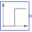

SlewRateLimiterDemonstrate usage of Nonlinear.SlewRateLimiter |
|
Diagram
{kind=link}
Information
This information is part of the Modelica Standard Library maintained by the Modelica Association.
This example demonstrates how to use the Nonlinear.SlewRateLimiter block to limit a position step with regards to velocity and acceleration:
- The Sources.Step block
positionStepdemands an unphysical position step. - The first SlewRateLimiter block
limit_vlimits velocity. - The first Der block
vcalculates velocity from the smoothed position signal. - The second SlewRateLimiter block
limit_alimits acceleration of the smoothed velocity signal. - The second Der block
acalculates acceleration from the smoothed velocity signal. - The Integrator block
positionSmoothedcalculates smoothed position from the smoothed velocity signal.
A position controlled drive with limited velocity and limited acceleration (i.e. torque) is able to follow the smoothed reference position.
Parameters (2)
| vMax |
Value: 2 Type: Velocity (m/s) Description: Max. velocity |
|---|---|
| aMax |
Value: 20 Type: Acceleration (m/s²) Description: Max. acceleration |
Components (6)
|  | positionStep |
Type: Step |
|---|---|---|
| limit_v |
Type: SlewRateLimiter |
|
| v |
Type: Der |
|
| limit_a |
Type: SlewRateLimiter |
|
| positionSmoothed |
Type: Integrator |
|
| a |
Type: Der |